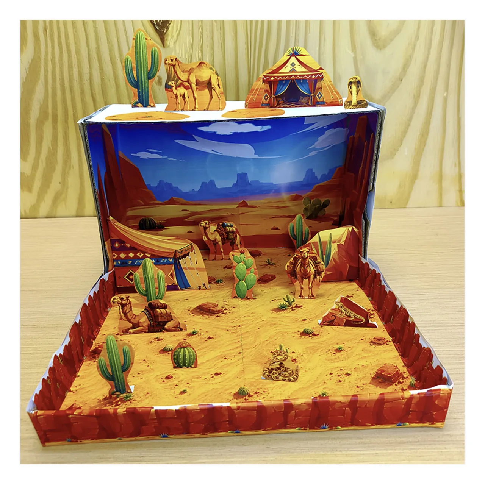
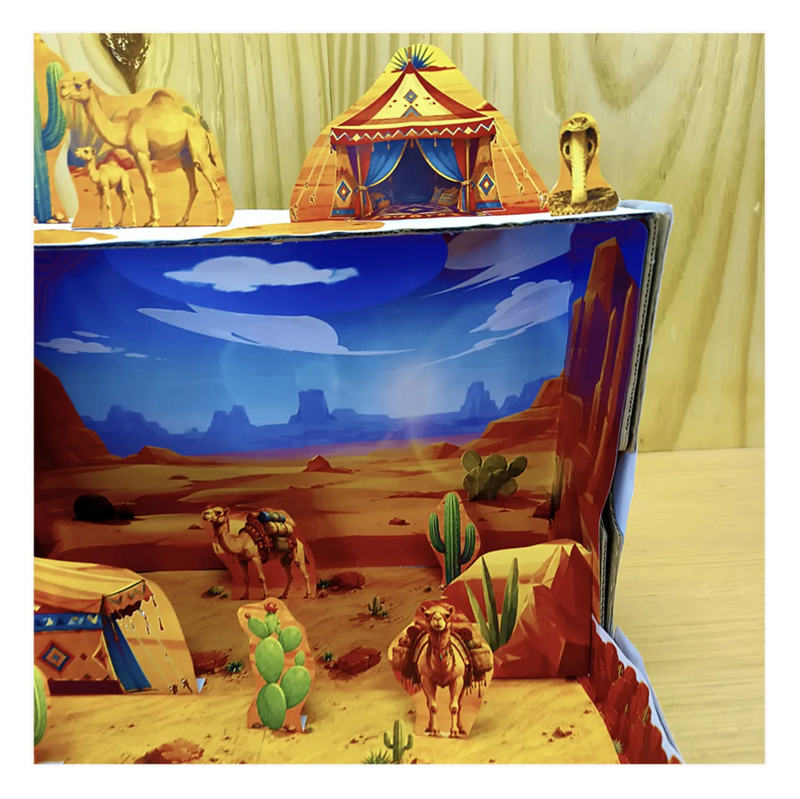
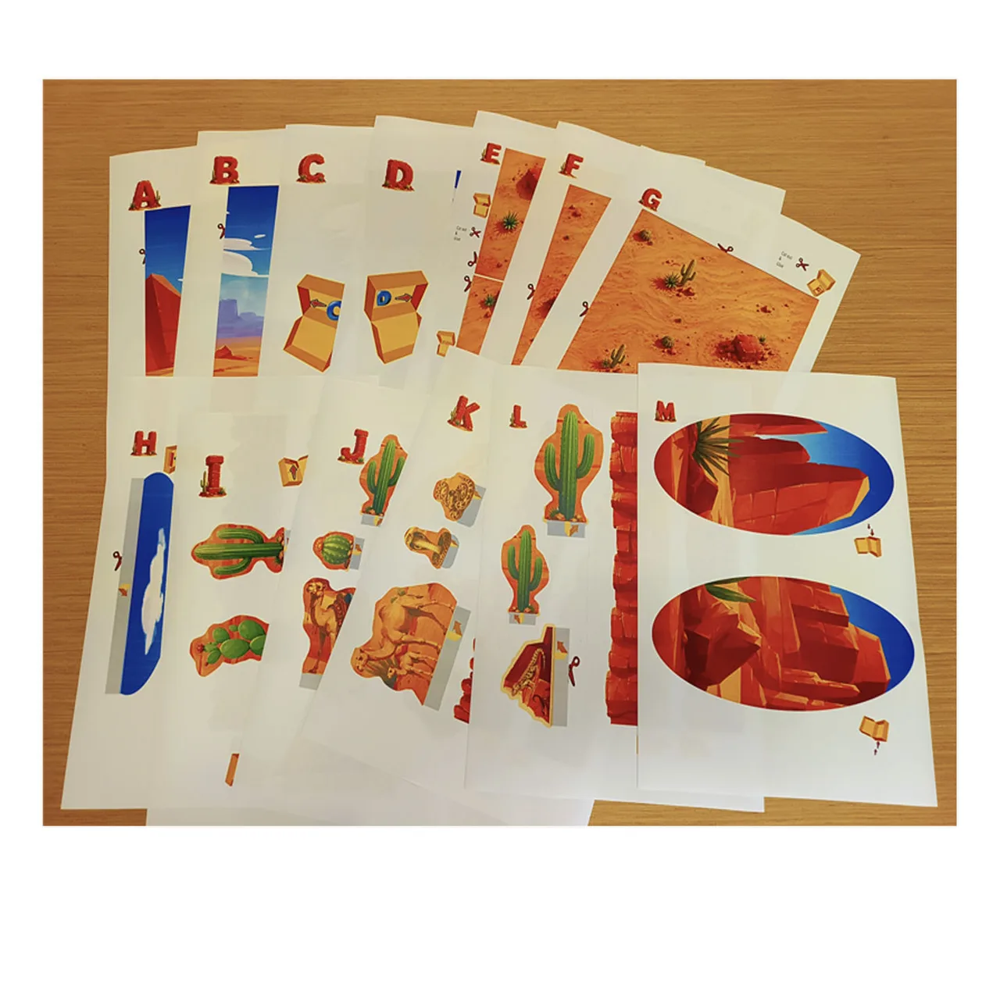
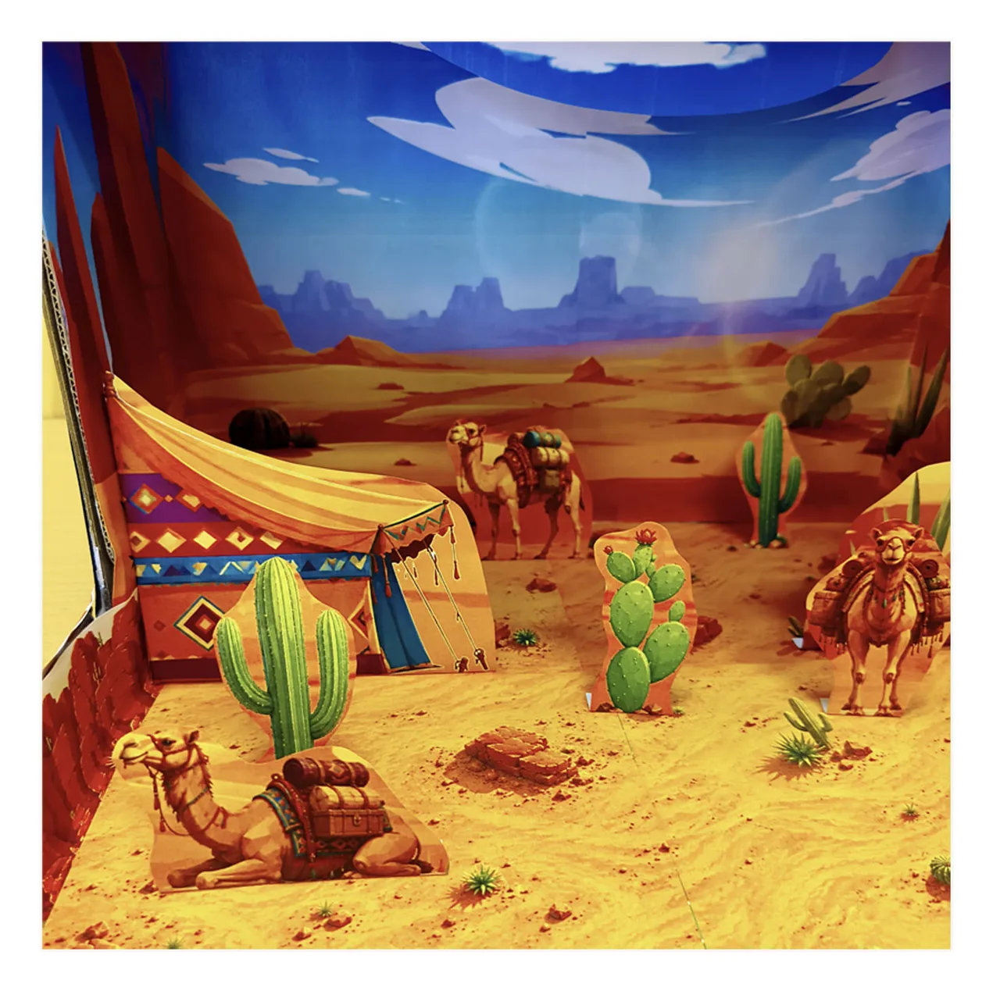
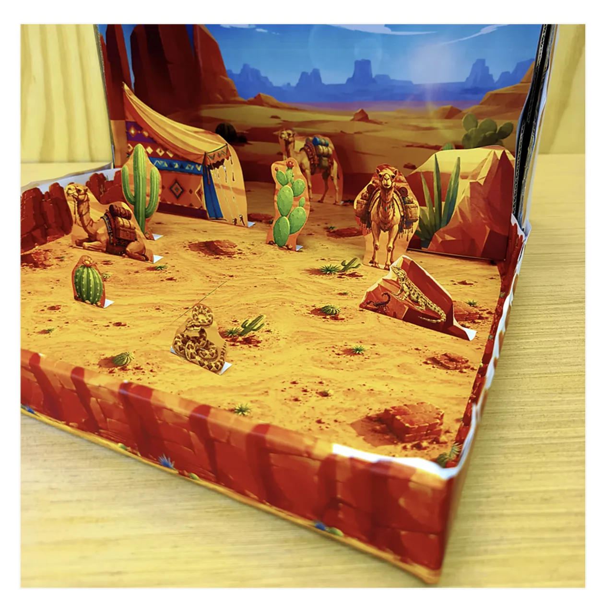
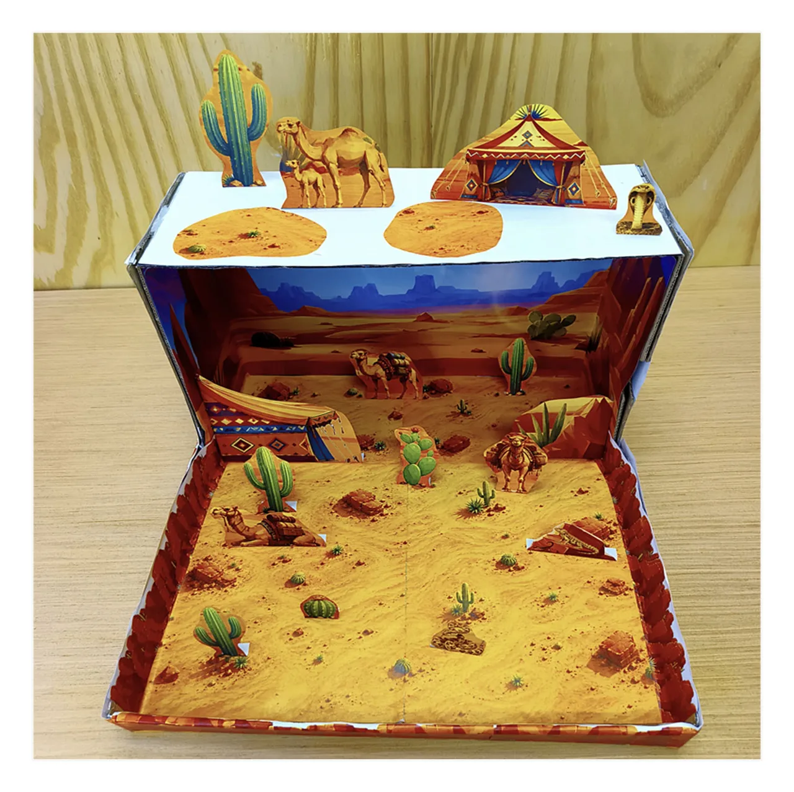

Maqueta del desierto 3D para niños
Convierte una caja de zapatos en un paisaje desértico con camellos, cactus, tiendas y formaciones rocosas. Este proyecto incluye 13 páginas a color para imprimir, recortar y construir paso a paso.
Una actividad creativa para proyectos escolares sobre el hábitat del desierto y para descubrir cómo animales y plantas sobreviven en este ecosistema terrestre.
Ver proyecto
PDF imprimible · Pago único · Descarga digital
Construye una maqueta del desierto en 3D
Imprime las piezas y crea un paisaje desértico con profundidad dentro de una caja de zapatos. Coloca camellos, cactus, tiendas y otros elementos para representar el hábitat del desierto y construir tu propio escenario.





Aprende sobre el ecosistema del desierto
Construir una maqueta del desierto ayuda a observar cómo plantas y animales pueden vivir en un ecosistema terrestre seco, con poca lluvia y grandes cambios de temperatura.
Clima seco
Los desiertos reciben muy poca lluvia. El agua es escasa y las temperaturas pueden cambiar mucho entre el día y la noche, por lo que los seres vivos necesitan adaptarse a condiciones difíciles.
Plantas del desierto
Los cactus y otras plantas de zonas áridas tienen adaptaciones que les permiten conservar agua. Algunas almacenan agua en sus tejidos y muchas tienen hojas pequeñas o espinas.
Animales adaptados
Los animales del desierto encuentran distintas maneras de soportar el calor y la falta de agua. Los camellos, por ejemplo, están especialmente adaptados para desplazarse y vivir en ambientes secos.
¿Qué incluye?
- 13 páginas a color.
- Fondos de paisaje desértico para la caja.
- Camellos, cactus, tiendas y otros elementos para recortar.
- Piezas que pueden colocarse en diferentes posiciones para crear profundidad.
- Archivo digital PDF para imprimir en casa.
Ideal para
- Proyectos escolares sobre el desierto y los hábitats.
- Actividades sobre ecosistemas terrestres y ambientes áridos.
- Manualidades de papel para niños.
- Aprender sobre plantas y animales del desierto.
- Familias que buscan una base sencilla para empezar un proyecto escolar.
¿Cómo hacer una maqueta del desierto?
Solo necesitas una impresora, papel, tijeras, pegamento y una caja de zapatos o una caja de cartón similar. Las piezas imprimibles ofrecen una base preparada para crear el paisaje sin tener que diseñar todo desde cero.
¿Listo para crear tu maqueta?
Construye tu propia maqueta del desierto
Descarga el proyecto digital en PDF, imprime las páginas y crea una maqueta del desierto en 3D para casa, clase o un proyecto escolar.
$3.49 USD · Pago único · Descarga digital
Ver todas las maquetas